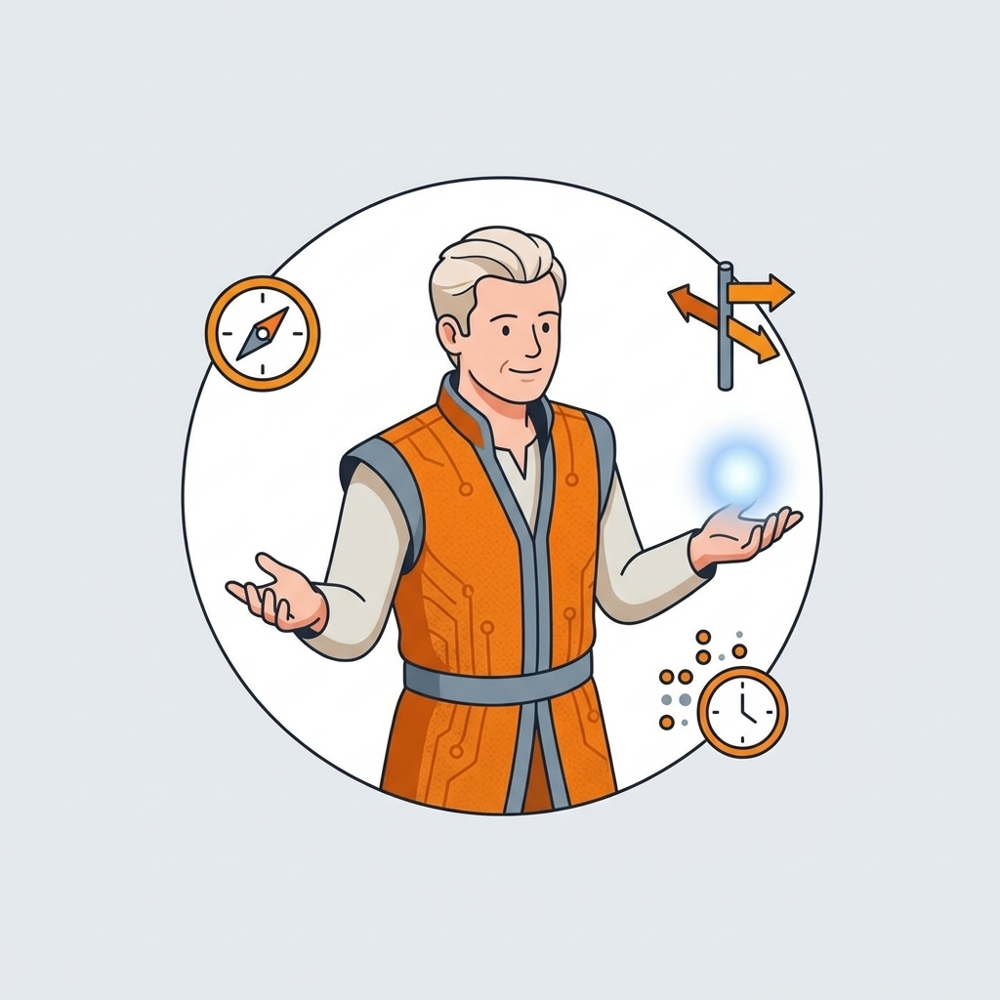
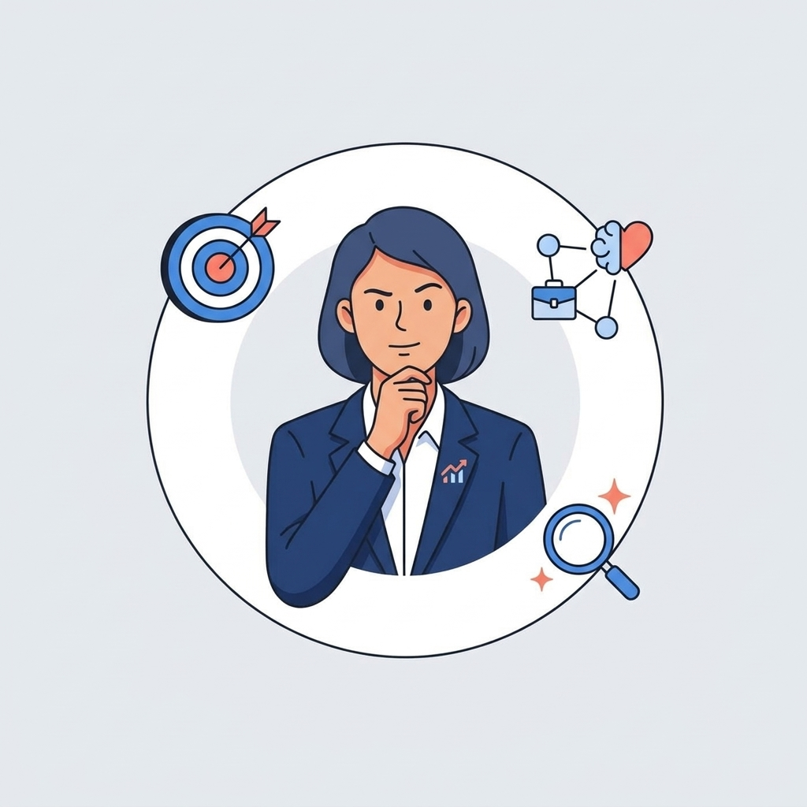
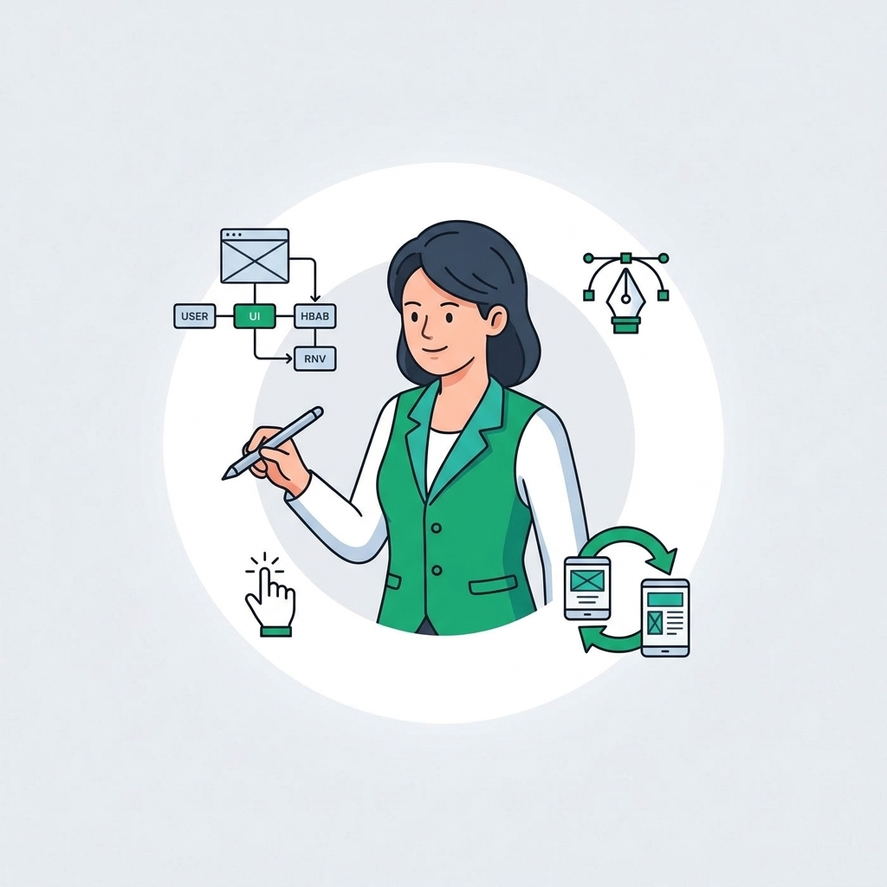
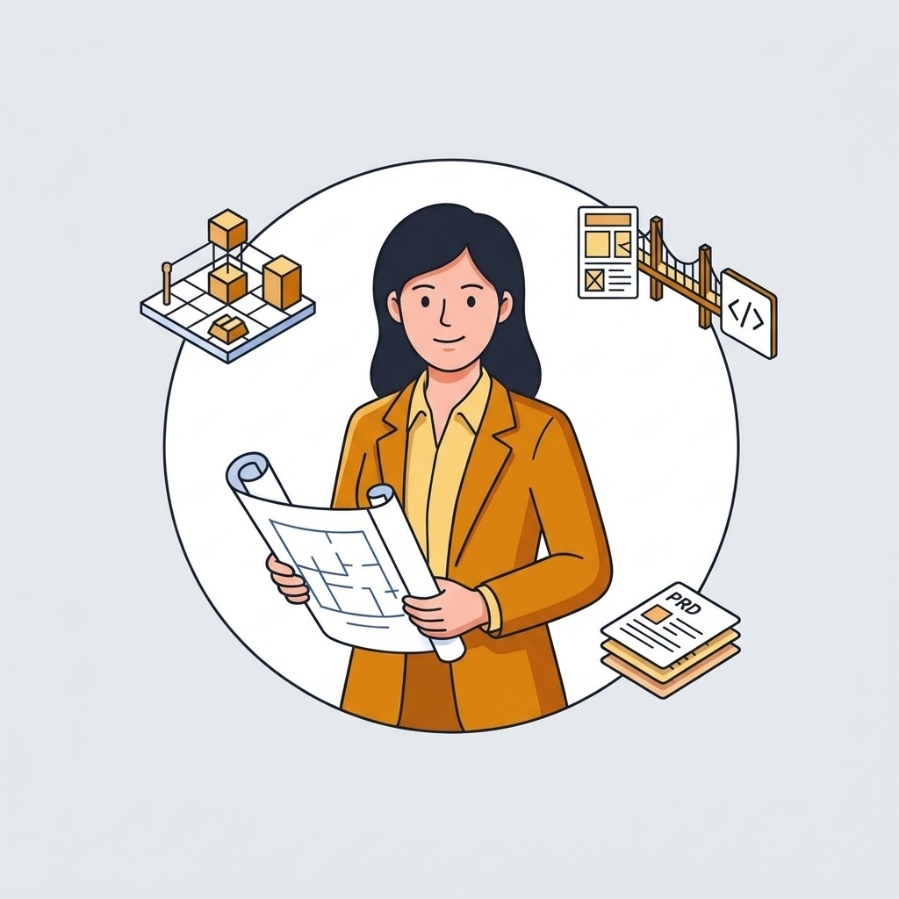
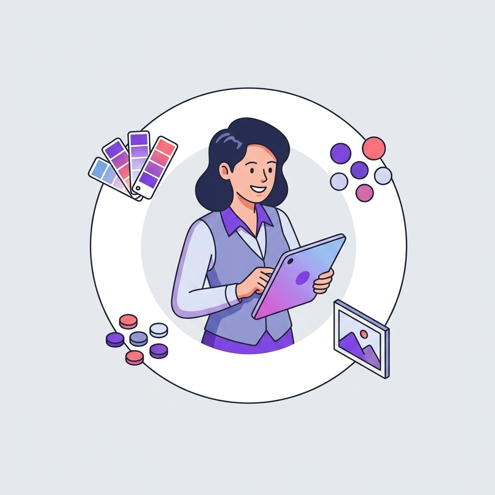

This case study describes the work at a high level. Specific metrics, internal tooling configurations, agent instructions, and proprietary processes have been generalized or anonymized to respect client confidentiality. The frictions, architecture, and design thinking remain authentic to my contribution.
I designed 10 AI agents for the product-development flow. 。
Not demos — working teammates. Born from the team's real pain, built inside a locked-down enterprise stack, running in production with 42 designers.
DiagnosisThe system I was working in
The problem was never the tools. It was the shape of the org.
Business and Technology scoped every project before design or strategy entered the room. There was no budget to test, so the highest-position opinion won. By handoff, the good UX was already out of scope. Everyone felt it — the designers, the strategists, even the design leaders. No one could move it.
One project. Pain at every stage.
This was the normal flow — and the point where design lost control at each step.
The through-line: at no point did design hold the evidence, the scope, or the timing. Frustration pooled at every stage.
Design leaders saw it. They still couldn’t change it.
Everyone, even the leaders, got overruled somewhere up the chain. So as a single designer I stopped trying to rewrite the org — and started architecting AI into the exact moments where it hurt, inside the workflow everyone already used.
MethodHow I found what to build
I couldn’t fix the org. So I found exactly where it hurt — and built for that.
I sat down with more than sixteen designers and strategists, one hour each, and listened. Then I turned the raw frustration into a map — and the map into a build list. The agents further down this page are simply the bets that survived it.
Listen → map → pilot.
A working agent was never one prompt — it was a stack of files.
Each one I built was really a small filesystem: a workflow file that sequenced the steps, an agent-definition file that fixed its role and rules, and separate deep-knowledge files it reasoned from. Studying BMAD’s spec-driven method taught me the lesson — it’s this structure, not clever wording, that lets an agent do genuinely fine-grained work.
And I earned it the hard way: version after version of each Gem, testing the outputs, feeding a Gem’s own results back in to sharpen its instructions — until it was reliable enough to hand to a 40-person team.
What I built
Sixteen interviews. Forty pains. Ten agents that answered them.
The whole diagnosis pointed to one move: stop patching the org, and build. Each structural failure got a purpose-built agent aimed straight at it — Master Brain, Justin, Sally, the WDS studio — and more. Here is each one, and the failure it replaced.
The deep dive — each system, up close.
Everything above is the whole story in brief. Read on for how each agent actually works — or jump with the rail on the left.
Master BrainThe organizational memory
One project brain. Every answer, on demand.
Knowledge lived in heads, emails, and research PDFs no one had time to read — the research team ran deep brand studies five to eight times a year that never reached a busy project. Deep experts were underused. So I built a single place that holds it all and answers back.
Brand Master Brain
Brand history, voice, and standards — so every project inherits what the brand already knows about itself.
Research Master Brain
Every deep study the research team produces — finally readable on demand, pulled into whichever project needs it.
Project Master Brain
All project scope, business docs, CX strategy, technical requirements, and every meeting transcript — synthesized into answers in real time. Ask it anything the project has ever known.
Instant onboarding
New teammates get productive in minutes — even an auto-generated onboarding video from 120+ sources.
Deep-dive on demand
Ask anything, go as deep as the project needs — no gatekeeper, no waiting.
Tangled requirements, answered
Activation, account creation, add-a-line — business + technical complexity resolved in seconds.
Never stale
Every meeting transcript is in within 24 hours. The brain keeps learning.
It answered the questions no one had time to answer.
Mobile activation, account creation, add-a-line — where business rules and technical requirements tangle together, the Project Master Brain replied accurately and fast, saving real hours. On one payment-flexibility initiative it could articulate the entire business case on demand: the customer suspension gap, the recoverable nine-figure annual revenue, and the three “how might we” questions the design had to answer. That’s the difference between a file archive and an organizational memory.
Justin CaseEdge Case Detector
Break the logic before a line of code exists.
The name is the pitch — built to check things just in case. A Gemini Gem wired to a dedicated NotebookLM of edge-case detection resources, Justin runs a structured deep scan on a design before it ever reaches a developer's queue.
Designers design the happy path. Users don't live there.
Every flow hides the same three traps — and they all come due at the most expensive possible moment.

Four layers. Every gap ranked. No code written yet.
Fed the Project Master Brain, an Initiative Alignment Brief, and optionally the existing UI, Justin scans across four layers and returns a ranked matrix — each gap paired with an open question product and engineering must resolve before build.
Type #audit — get 20–40 ranked questions engineering has to answer.
Each catch is phrased as a question, not a complaint. Real ones from a single payment feature: what happens to a payment made at 11:59 PM when the system suspends the account at 12:02 AM? Does a user in Guam (UTC+10) see “Day 0” while US-Eastern servers still say “Day −1”? If AutoPay batches lock 24–48 hours ahead, does the user get double-billed? What does five rage-clicks on “Pay” during a 60-second API hang actually charge?
SallyPrincipal CX Strategist
No budget to test? Test against human psychology.
A Gemini Gem paired with a dedicated NotebookLM knowledge base, Sally fills the void where user testing should have been — stress-testing a flow against behavioral science instead of the highest-paid person's opinion.
analysis
She runs the whole audit across three layers.
Not an opinion. A verdict — with a number.
Auditing a device-activation flow against its persona, Sally found it treats an owner (who already holds the device) like a shopper (who needs to buy) — triggering “double-payment anxiety” and abandonment at the exact screen where a cart total appears.
Never one answer — always a ladder of options.
For each friction, Sally returns three tiers — quick fix, standard, north star — each with its reasoning attached. One example, for a manual serial-number entry that violated Fogg's Ability principle:
A UX evaluator
Feed her the three files and she graded the finished flow — a multi-lens analysis of where the design fought human psychology, scored and cited. Powerful, but it happened after the design was done.
A design partner
Now she helps shape the design, not just test it — framing the brief, proposing the strategy, and generating ranked options before a pixel is committed. Not a grade at the end; a collaborator at the start.
What Sally produces
- Initiative Alignment Briefs — framing a project's business case and CX opportunity before design work starts.
- CX Audit Reports — detail report, executive summary, and slide deck, scored sub-score by sub-score.
- Strategic Options slides — for each friction found, ranked solution paths with trade-offs a designer can defend to stakeholders, not a single fix handed down.
The team's gain is threefold: instant self-auditing without testing budgets or lead times, scientific consistency — every screen held to the same ISO and behavioral-science standards — and internal validation, so designers walk into stakeholder reviews with evidence instead of hope.
WDSWhiteport Design Studio · 5-agent collective
Agentic design, carried into a browser tab.
The agent workflows that power Claude Code and Codex live in the engineer's terminal — a place our product-design org simply could not go. No CLI. No VS Code. No API. Just Gemini in a Chrome tab. My core contribution was to rebuild that terminal-grade, agent-led design process as a set of Gems the whole team could open, share, and run — inside the one locked-down stack we were allowed to touch.
The engineer's terminal
Command line, spec-driven agents, version control, direct model access. Powerful — and completely off-limits to designers.
across
One browser tab
Strategy, UX, and product-design teams had exactly one approved AI surface — Gemini in a browser. Installing anything else was a battle.
From one giant prompt to a filesystem.
My first agents were single, sprawling prompts — and they collapsed under their own context. The fix was architectural: break each agent into small, versioned parts — a workflow that sequences the steps, and separate knowledge files it loads only when needed.
Authored in Claude Code, deployed as a Gem. The agent stopped forgetting — and I stopped fighting the window.
NotebookLM worked alone. Google Drive worked for everyone.
Solo, a Gem wired to my own NotebookLM was brilliant. The moment I shared it, it broke — the knowledge and sources didn't travel with the Gem. So I moved the workflow and knowledge files onto Google Drive: one shared, governable source that every teammate's Gem could load the same way.
That turned a personal trick into an organizational capability — the real unlock for a 40-person team.
I installed VS Code myself — then wired Figma to it.
In a design org where even installing VS Code was a fight, I set it up, connected it to AI, and linked it to Figma via MCP. Suddenly I could turn Figma frames into code, build the design system as real tokens, and feed those tokens back into prototyping.
The payoff was fidelity: AI prototypes that obeyed the brand from the very first prompt, because they were grounded in the actual design-system code.
It spread because I never issued a decree.
The org was siloed and stiff; a top-down “everyone use AI now” was never going to land. So instead of replacing the product-development flow, I found the exact moment each role felt pain and slipped a genuinely useful agent into it — then connected those moments back into the flow.
The result: a five-agent design studio.
Codenamed after Norse gods, the WDS agents relay a brief forward — brief → strategy → interaction → architecture → visuals — each a Gem I designed, each grounded in shared Drive knowledge. Built on BMAD's spec-first discipline, but retargeted from shipping code to shaping concepts precise enough to hand a developer.





Fed the Project Master Brain and an alignment brief, the studio relays the work forward — and out the other side comes a CX/UX strategy, multiple solution scenarios, and prototyping prompts ready for Gemini Canvas or Figma Make. On one payment project it took a tangled brief from chaos to concept: strategy first, then interactive prototypes built on the brand's real design-system tokens — and when the team wanted breadth, dozens of interaction variations of the same flow, generated at once.
Clara & Alex — the Guardian and the Builder
Workflow Transformation
The workflow sequence stayed the same: BRD, CX Playbook, User Journey, Design, Prototype, Handoff, QA, Launch. But every phase now has an AI agent running in parallel — surfacing context, validating assumptions, catching edge cases.
New Workflow with AI Agents
Scale & Outcomes
After: Designers operated at the strategic level the role was always supposed to require. They made decisions. They challenged assumptions. They designed with evidence.
Same pipeline. Fundamentally different output.